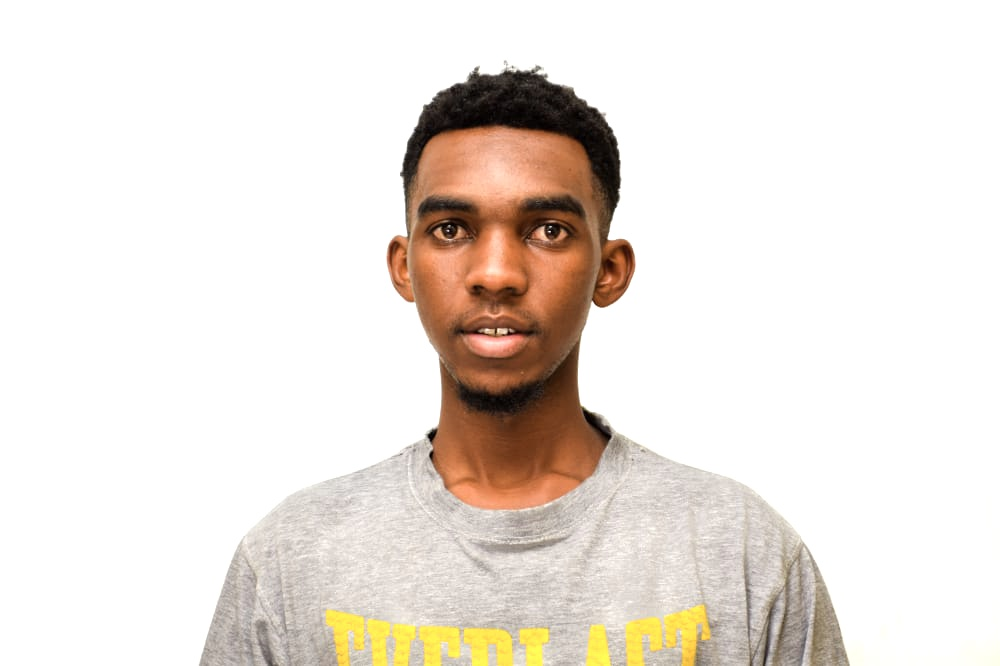

Onwell Mazorodze
Contact Details
,
Hobbies
Summary
As a creative and inquisitive rising junior computer science student, I am
passionate about software engineering and Mobile
Development. I am seeking an opportunity to utilize my technical skills
with the aim to connect society with tomorrow’s
technology while growing my professional foundation.
Education
Alabama State University : Class of 2025
Bachelors of Computer Science; 3.9/4.0 GPA
Minor in Mathematics
Work Experience
Assistant Information Technology - Alabama State University
Fall 2022 - Fall 2023
- Revamped the social media for the student newspaper garnering 800+
followers on Facebook and Instagram
- Managed over 6 students, to publish digital content on the newspaper website and social media increasing the number
of users by 120%+
- Organized bi-weekly meetings for the Digital and Interactive team to retrieve website and social media analytics.
Near-Peer Mentor - HBCU First
Jan 2023 - March 2023
- Led a first-year schoolmate through a 10-week, curriculum-based, 1:1 mentoring program.
- Created a Capstone Project video detailing highlights of the HBCU Near-Peer Mentoring Program.
- Earned a Day-One-Ready Program certificate by completing 40 hours of career-building workshops featuring industryleading
executives.
Projects
BMI Calculator
Created an Android mobile application designed to calculate the BMI of a person.
- Assumed Head of Design, overseeing UI/UX design and framework, branding, and marketing
- Utilized Kotlin to program the backend that allowed the calculation of BMI and provide a meaningful statement of what
the value represents.
Online Portfolio
Created and designed an online portfolio using HTML and CSS, showcasing professional achievements and skills.
- Leveraged GitHub to publish the online resume, providing a readily accessible link for prospective employers and collaborators to
review the portfolio and gain valuable insights into expertise and accomplishments.
Skills
Python 3 • C++ • SQL/MySQL• GIT • Android Development • Kotlin • PyCharm • Android Studio • VisualStudio • HTML • Figma •
CSS.
Awards
Alabama State University Presidential Scholarship • The National Society of Leadership and Success nomination • CodePath
(Intro to Software Engineering) Certificate • Dean’s List; 2021, 2022, 2023 • New Seasons Youth Program Scholarship,
Indeed Job Search Certificate, HBCU First Certificate